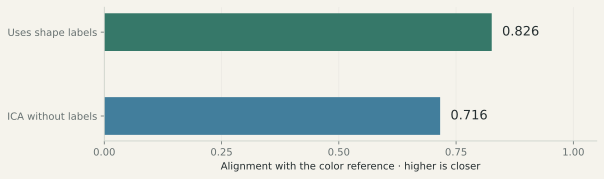
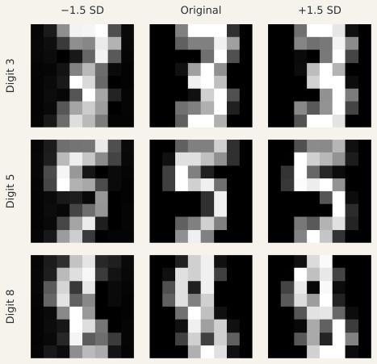
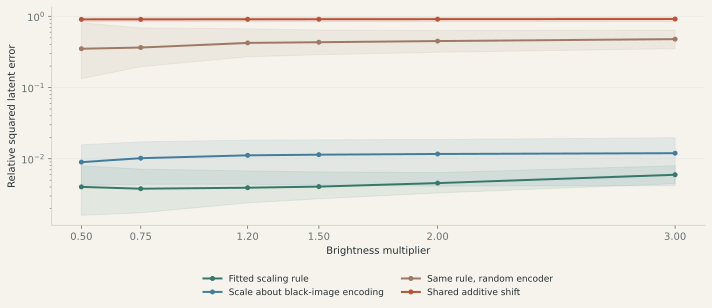
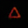

A red 3 and a red 9 have different digit labels but share a color. Can a model find that shared attribute when it is given only the digit labels?
The project studies variation that class labels leave out: color, slant, stroke thickness, and uneven edges. The experiments below examine what can be found from shape or digit labels, and how a trained model represents image changes. Related work on learning representations from paired changes examines how the information supplied during training affects what a model can learn.
01
Shape labels supplied · color labels withheld
Find color-related variation from examples.
The experiment uses triangles, squares, pentagons, and hexagons in different colors and stroke thicknesses. It supplies the shape labels, then compares examples of the same shape. A statistical method called independent component analysis (ICA) looks for recurring patterns in those differences.
Information suppliedImages + shape labels
→
Pattern found in the imagesA direction associated with color

Recorded small-scale run. After discovery, the best-matching component is compared with a reference built from red versus non-red examples. A score of 1 means exact alignment. This is an alignment score, not classification accuracy.
What was found
The method found color-related structure without being told which images were red. Comparing within each shape improved alignment with the color reference from 0.716 to 0.826 in this run.
The recovered components still contain traces of shape outlines. This is partial separation of color from shape; adding a component to another image can leave ghost outlines. Finding an attribute and using it to edit a new image are separate tests.
One recorded synthetic-data run. Both discovery methods use PCA and ICA; one also receives shape labels. Procedure and measurements →
02
Digit labels → patterns of variation
Compare examples within the same class.
Comparing one 3 with another holds the digit label fixed while exposing changes in appearance. Combining those comparisons reveals common patterns of variation. Here a covariance calculation finds the directions in which the training images vary most within their digit classes.

One fitted direction, three held-out digits. The same leading variation direction is applied to a held-out 3, 5, and 8. All three classes occur in training. Columns move by −1.5, 0, and +1.5 training standard deviations; pixels are clipped for display. The data are 8×8 handwritten digits.
What this shows
The same learned direction changes all three examples. It can affect several visual properties together; this picture does not establish a pure “shakiness” direction.
Does using this geometry change classification?
A blur experiment tests this on digits 3, 5, and 8. When training blur is misleadingly associated with the digit label, removing the selected variation directions raises nearest-mean accuracy from 74.0% to 82.3%. With independent blur it lowers accuracy from 93.2% to 87.4%. The usefulness of a variation direction depends on the prediction task.
The study compares removal and weighting with LDA, logistic regression, nearest neighbors, and paired blur augmentation. Logistic regression reaches 93.2% in the correlated-blur setting; paired augmentation reaches 97.3%. Full comparison and inputs →
03
Neural network · learned image coordinates
How does a trained model represent brightness?
A neural network learns to compress images into 32 numbers and reconstruct them. The study then fits a brightness rule in those learned coordinates and tests it on new images. The network learns the coordinates; a separate fit learns how much to scale and shift those coordinates.
1brightness ratio used to fit the rule
96new image configurations
6multipliers tested per configuration
A scaling rule around a learned center
z
Encoded image
r
Brightness multiplier
c, α
Center and exponent fitted from pairs
A gain and offset fitted only at ratio 1.5 define the rule. It is then tested at multipliers 0.5, 0.75, 1.2, 1.5, 2, and 3 on 96 separate configurations and three trained encoders.

Smaller values mean a better prediction of the actual encoded change. The log axis separates methods spanning several orders of magnitude. Lines average three seeds and two starting brightness levels; bands span those six cells.
Measured result
The fitted action's relative squared latent error stays between 0.0016 and 0.0080 across the trained-encoder cells. The same fitted rule predicts brightness changes across new images and multipliers.
Request a 1.5× brighter image.
The target multiplies every RGB intensity by 1.5. Compare the model’s ordinary reconstruction with its reconstruction after the brightness edit. The model can blur an image even when no edit is requested.
Original, target, and two model outputs32 × 32 pixels
Original imageBefore it enters the modelTarget: 1.5× brighterExact requested imageCopy without an editCompress → reconstructCopy with the editCompress → brighten → reconstruct

Compare both model outputs with the brighter target.
All nine saved test examples are available across three model runs. The images share the same display scale; pixel values are clipped to [0, 1] for display only.
Simply brightening the model’s ordinary reconstruction is another useful comparison. The learned edit has 0.99× that method’s mean squared image error inside the training brightness range and 1.17× outside. The main result is the measured brightness rule in the model’s learned coordinates.
A separate color-rule control tests fitting a predefined RGB rotation from paired images.